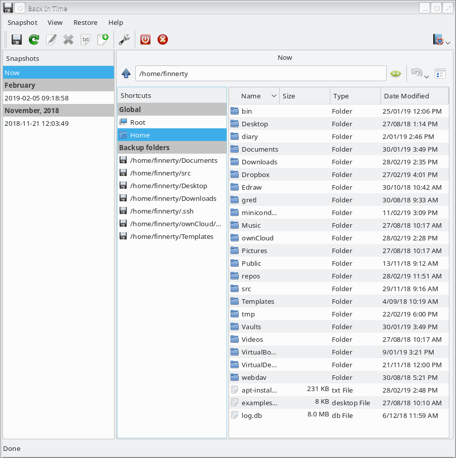
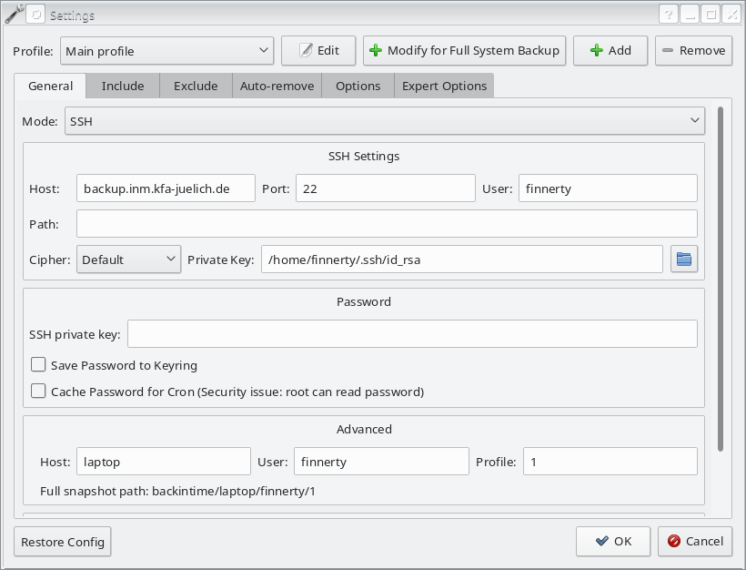
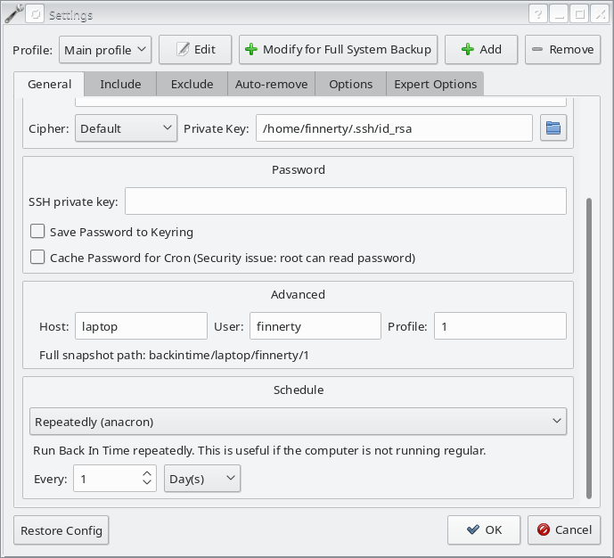
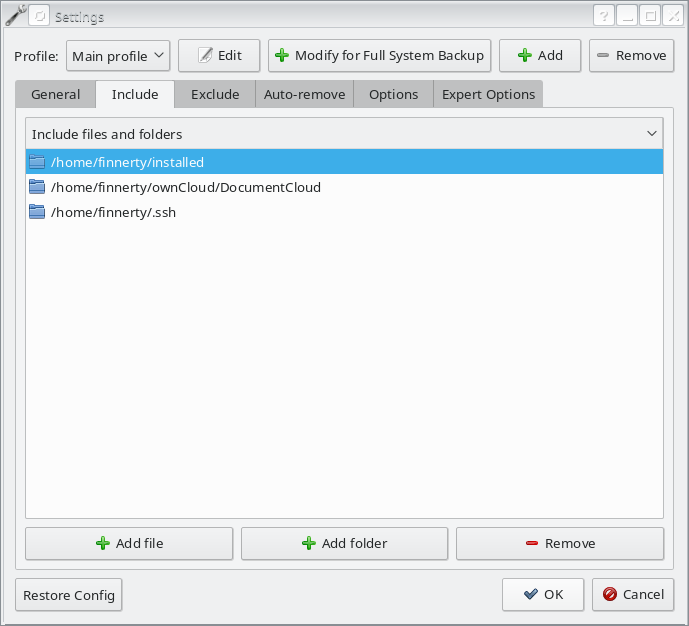
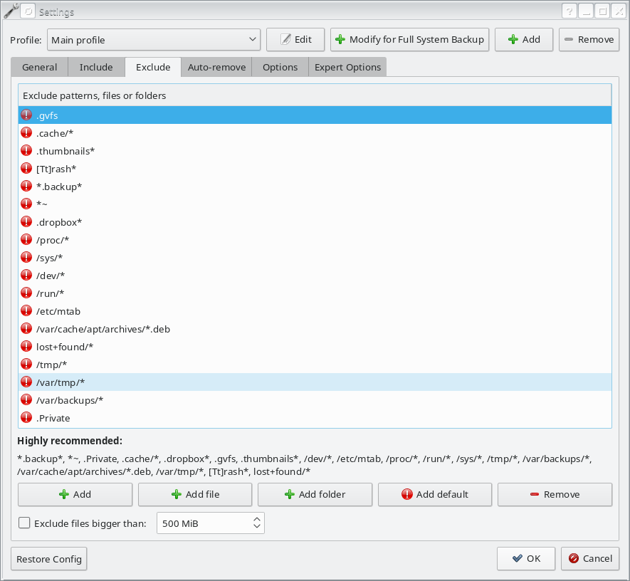
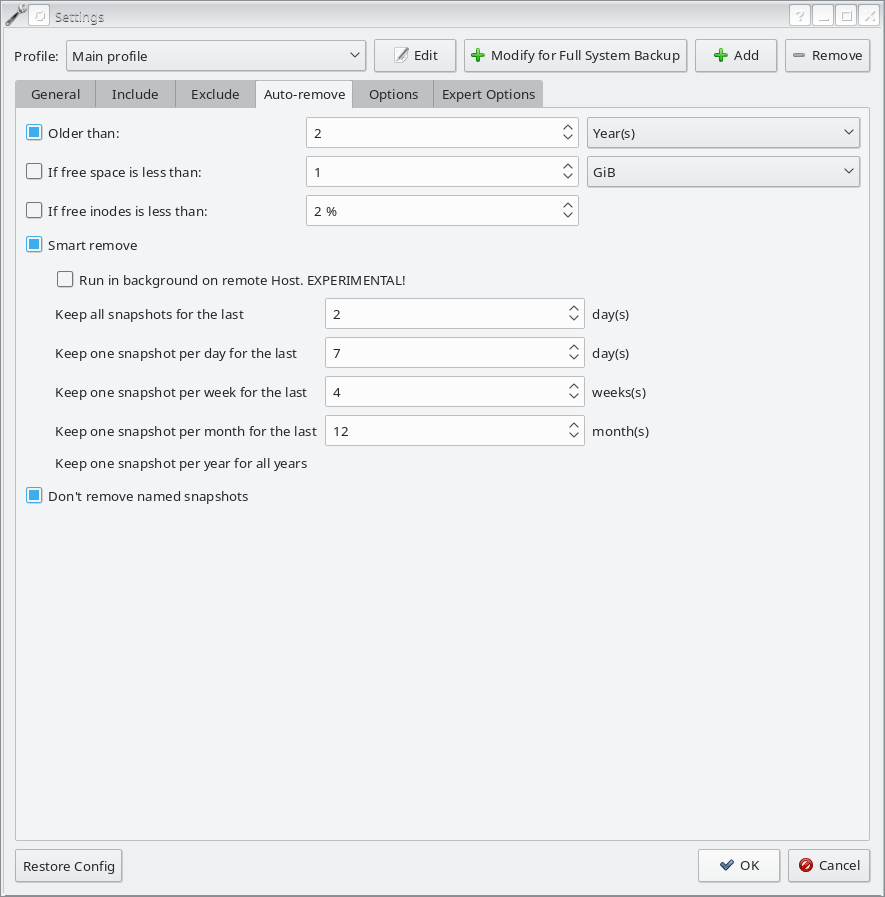
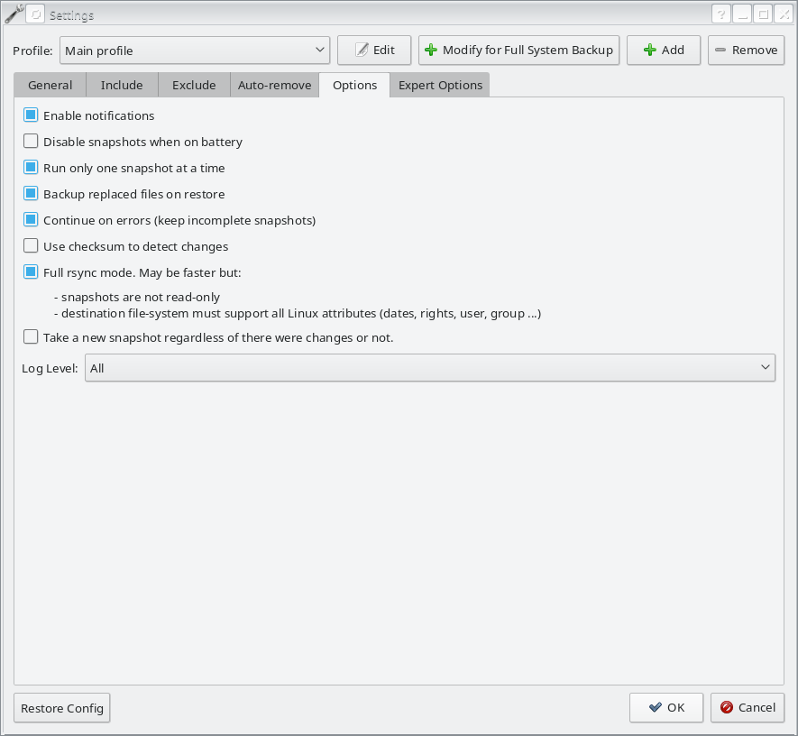
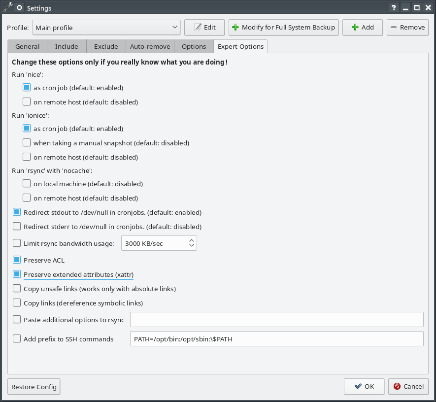

Backing Up 2019
Justin Finnerty
2019-02-15
My harddrive broke and all my work is gone. I should have made some backups..
What is the purpose of a backup?
- Safety
- Versioning
- Definitive location
What is a definitive location?
What type of backup?
Archive
- Multiple versions of files kept.
- Able to return to an earlier version.
- Requires more disk space.
Backup
- Stores a copy of content at a given point.
- Requires only as much disk space as the original.
Where to backup?
How often to backup?
- For an archive
- How often do you want to save a new version?
- For a backup
- How often do you want to save the current version?
How To Backup
What to back-up
dpkg --get-selections > ~/installed/installed.txt
sudo cp -R /etc/apt/sources.list* ~/installed/
sudo apt-key exportall > ~/installed/repo.keys
sudo chown -R finnerty:finnerty ~/installed
Directory organisation
- Separate what to back up.
Example 1
- bin
- Desktop (empty)
- Downloads
- Documents
- data
- installed
- mounts
- ownCloud
- DocumentCloud
- own-folder-1
- own-folder-2
- shared-folder-1
- shared-folder-2
- repositories
- src
- vaults
- virtual-machines
Example 2
- Projects
- project-1
- repositories
- data
- documents
- project-2
- repositories
- data
- documents
back-in-time
Main Interface
back-in-time application
General settings
back-in-time General Settings Tab
Schedule your back up
back-in-time General Settings Tab
What to include
back-in-time Include Settings Tab
What to exclude
back-in-time Exclude Settings Tab
How to set up archive
back-in-time Auto-Remove Settings Tab
More details
back-in-time Options Settings Tab
Even more details
back-in-time Expert Options Settings Tab